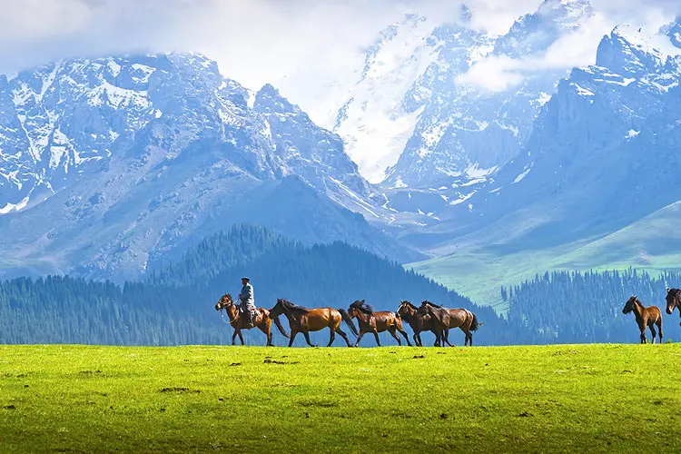

Xinjiang | a land of deserts, alpine lakes and Silk Road landscapes
Xinjiang is an enormous region in northwestern China, where vast deserts, snow-covered mountains, green oases and endless grasslands create some of Asia's most dramatic landscapes. Located at the crossroads of Central Asia and China, it is shaped by the Tian Shan mountain range and the Taklamakan Desert, with a rich cultural heritage influenced by centuries of Silk Road trade and different Central Asian peoples.
Among its most impressive sights are Heavenly Lake (Tianchi) – a turquoise alpine lake surrounded by forested mountains beneath the Bogda Peak; Turpan's Flaming Mountains – striking red sandstone hills rising above a dry desert basin; and Jiaohe Ancient City – the remarkably preserved ruins of a Silk Road settlement built on a natural plateau. Further north, the grasslands and mountains around the Tian Shan offer a completely different landscape, while the traditional villages and vineyards around Turpan reveal the region's long history of oasis agriculture.

Itinerary
Day 1 – Arrival in Urumqi
Arrive at Ürümqi Diwopu International Airport and transfer to your hotel. Explore the Xinjiang Regional Museum to learn about the region's history and Silk Road connections. In the evening, visit the International Grand Bazaar, known for its traditional architecture, handicrafts and local food. Overnight in Urumqi.
Day 2 – Heavenly Lake and the Tian Shan Mountains
Travel approximately 1.5–2 hours east of Urumqi to Heavenly Lake (Tianchi), surrounded by spruce forests and snow-covered Tian Shan peaks. Spend the day walking along the lakeside trails and enjoying the spectacular mountain scenery before returning to Urumqi for the night.
Day 3 – Journey to Turpan and Jiaohe Ancient City
Take a high-speed train from Urumqi to Turpan, followed by a transfer into the city. Visit Jiaohe Ancient City, a remarkable archaeological site built on a raised plateau between two river valleys. Explore its ancient streets, temples and mud-brick ruins. Overnight in Turpan.
Day 4 – Flaming Mountains and Grape Valley
Explore the Flaming Mountains, famous for their intense red sandstone ridges. Continue to the Bezeklik Thousand Buddha Caves, a historic complex of Buddhist cave temples carved into the cliffs. Afterwards, visit Grape Valley, a green oasis filled with vineyards and traditional irrigation channels. Overnight in Turpan.
Day 5 – Turpan and departure
Visit the Karez irrigation system, an ingenious network of underground channels that has supplied water to Turpan's oasis communities for centuries. If time allows, visit the historic Emin Minaret before taking the high-speed train back to Urumqi. Transfer to the international airport for your onward journey home.